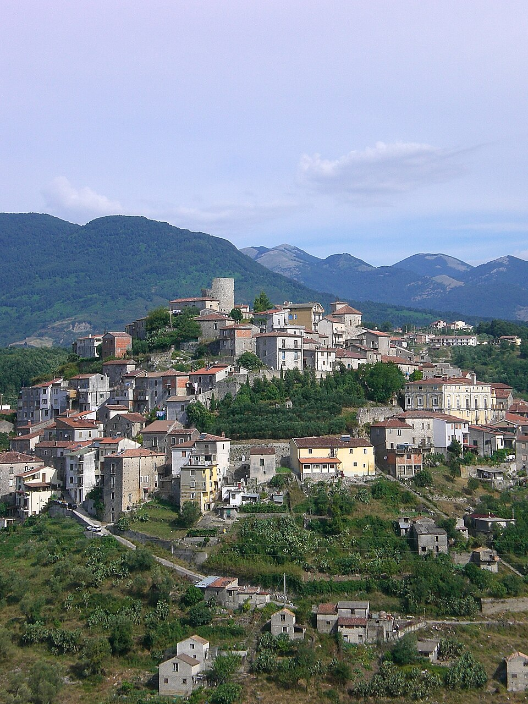

CIPorti a teatro?
Associazione di promozione sociale di Caselle in Pittari
Chi siamo
CIPorti a teatro? è un'associazione di promozione sociale di Caselle in Pittari, costituita l'11 marzo 2026.
Chi siamo
Non ha fini di lucro, è apartitica e aconfessionale, e vive del lavoro volontario dei suoi soci.
Cosa facciamo
Educazione, istruzione e formazione.
Cosa facciamo
Cura dell'ambiente e delle risorse naturali.
Cosa facciamo
Giornate ecologiche e recupero di aree abbandonate.
Cosa facciamo
Visite guidate e percorsi per tutti.
Il territorio
Promuoviamo il territorio valorizzando le persone e le sue ricchezze, e lo tuteliamo curando le aree abbandonate, con il coinvolgimento diretto della comunità.
Il territorio
Contribuiamo a formare una nuova cultura ambientale, perché il territorio sia fruibile da tutti senza essere deturpato.
Diventa socio
Si aderisce come socio ordinario con una domanda al Consiglio Direttivo.
Fine del primo atto
Il resto lo scriviamo insieme.
Con la partecipazione di
i soci e i volontari
di Caselle in Pittari
Come lavoriamo
- Democratica
- Le cariche sono elettive e le decisioni passano dall'Assemblea dei soci.
- Trasparente
- L'amministrazione è trasparente, anche sul piano fiscale.
- Gratuita
- I soci prestano la loro opera in modo spontaneo, gratuito e solidale.
Prossimamente
Nuovi spettacoli e giornate in preparazione.
Per sapere quando, scrivici o chiamaci.
Girato a

Contatti
- Sede
- Via Nazionale, n. 42
84030 Caselle in Pittari (SA)
Apri la mappa - Telefono
- +39 348 297 4991
- Codice fiscale
- 93050770655
Cercasi attori, tecnici e spettatori
Si aderisce come socio ordinario con una domanda al Consiglio Direttivo.
- Fotografia
- Geofix, licenza CC BY-SA 3.0, ritagliata
- Caratteri
- Fraunces e Instrument Sans
CIPorti a teatro?
Associazione di promozione sociale